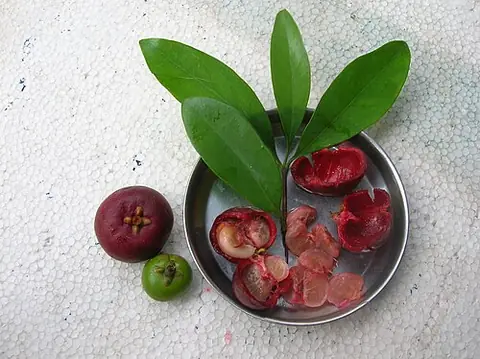

Kokum
Kokum is a wild fruit you can forage from March to May in South India and West coast and Deccan. Western Ghats and Konkan tree with purple-red sour fruit. Cooling in summer.

When is kokum in season in India?
Kokum is usually in season March to May. Timing shifts with weather, latitude and altitude.
Where does kokum grow in India?
Kokum grows in Andaman and Nicobar Islands, Andhra Pradesh, Dadra and Nagar Haveli and Daman and Diu, Goa, Gujarat, Karnataka, Kerala, Lakshadweep, Maharashtra, Puducherry, Tamil Nadu, Telangana. Regions: South India, West coast and Deccan.
How do you recognise kokum?
Western Ghats and Konkan tree with purple-red sour fruit. Cooling in summer.
How do you harvest kokum?
Collect fallen ripe purple fruit, or pick with a pole. Many trees are owned, so ask first.
How do you eat kokum?
Sol kadhi, saaru, kokum sharbat.
How do you store kokum?
Salt and sun-dry the rinds. Keeps a year. Also makes syrup.
What can you cook with kokum?
- Kokum sharbat: Soak dried kokum rinds overnight, mash and strain. Add jaggery, a pinch of roasted cumin and salt, then top up with cold water.
- Sol kadhi: Soak kokum in warm water, then mix the pink extract with coconut milk, crushed garlic, green chilli and salt. Drink chilled after meals.
- Kokum saaru: Thin, tangy kokum rasam tempered with ghee and cumin.